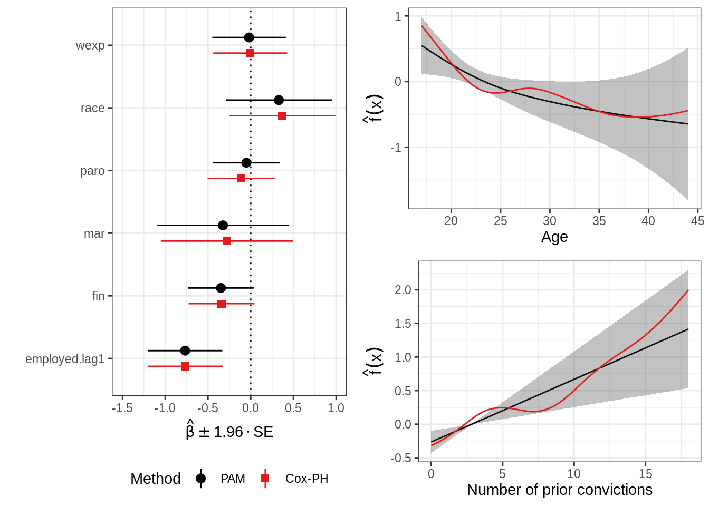
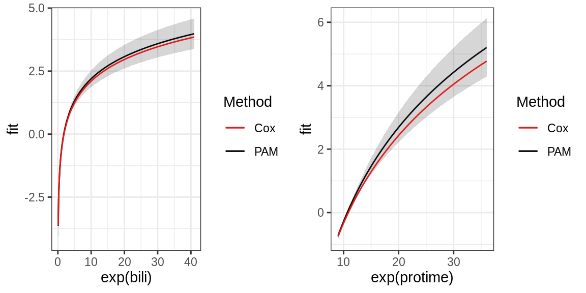

library(tidyr) library(dplyr) library(ggplot2) theme_set(theme_bw()) library(survival) library(mgcv) library(pammtools) Set1 <- RColorBrewer::brewer.pal(9, "Set1")
In the following, we demonstrate an analysis containing time-dependent covariates, using the well-known recidivism data discussed in detail in Fox and Weisberg (2011). The R-Code of the original analysis using the extended Cox model can be found here, the respective vignette here.
# raw data # http://socserv.mcmaster.ca/jfox/Books/Companion/scripts/appendix-cox.R recidivism <- read.table( file = "http://math.unm.edu/~james/Rossi.txt", header = TRUE) %>% mutate(subject=row_number())
In this example we don’t need a dedicated function for transformation, as we basically just need to transform the data into long format (equals splitting at each week for which subjects are in the risk set):
# transform into long format recidivism_long <- recidivism %>% gather(calendar.week, employed, emp1:emp52) %>% filter(!is.na(employed)) %>% # employed unequal to NA only for intervals under risk group_by(subject) %>% mutate( start = row_number()-1, stop = row_number(), arrest = ifelse(stop == last(stop) & arrest == 1, 1, 0), offset = log(stop - start)) %>% select(subject, start, stop, offset, arrest, employed, fin:educ) %>% arrange(subject, stop) recidivism_long <- recidivism_long %>% mutate(employed.lag1 = lag(employed, default=0)) %>% slice(-1) %>% # exclusion of first week, as lagged information is missing ungroup()
Below we fit a PAM and an extended Cox model. In this case the format for both models is the same (which is not always the case for analyses with time-dependent covariates, see the second example below using the pbc data): The stop variable defines the interval endpoints and is used to model the baseline log hazard rates.
## Fit PAM (smooth effects of age and prio, using P-Splines) pam <- gam(arrest ~ s(stop) + fin + s(age, bs="ps") + race + wexp + mar + paro + s(prio, bs="ps") + employed.lag1, data=recidivism_long, family=poisson(), offset=offset) tidy_fixed(pam)
## # A tibble: 6 x 4
## variable coef ci_lower ci_upper
## <chr> <dbl> <dbl> <dbl>
## 1 fin -0.349 -0.732 0.0349
## 2 race 0.330 -0.289 0.949
## 3 wexp -0.0192 -0.449 0.411
## 4 mar -0.325 -1.09 0.444
## 5 paro -0.0501 -0.444 0.343
## 6 employed.lag1 -0.767 -1.20 -0.331## respective extended cox model cph <- coxph( formula = Surv(start, stop, arrest)~ fin + pspline(age) + race + wexp + mar + paro + pspline(prio) + employed.lag1, data=recidivism_long) # extract information on fixed coefficients tidy_fixed(cph)[c(1, 4:7, 10), ]
## # A tibble: 6 x 4
## variable coef ci_lower ci_upper
## <chr> <dbl> <dbl> <dbl>
## 1 fin -0.341 -0.727 0.0451
## 2 race 0.368 -0.254 0.991
## 3 wexp -0.00569 -0.438 0.427
## 4 mar -0.277 -1.05 0.498
## 5 paro -0.109 -0.505 0.288
## 6 employed.lag1 -0.765 -1.20 -0.327The figure below summarizes the comparison between the two models.
Expand here for R-Code
all_eff <- purrr::map_df( list( tidy_fixed(pam), tidy_fixed(cph)[-c(2:3, 8:9), ]), bind_rows, .id="Method") %>% mutate(Method = factor(Method, levels=2:1, labels=c("Cox-PH", "PAM"))) ## plot of fixed coefficients coef_gg <- ggplot(all_eff, aes(x=variable, y=coef, ymin=ci_lower, ymax=ci_upper)) + geom_hline(yintercept = 0, lty=3) + geom_pointrange(aes(col=Method, shape=Method), position=position_dodge(width=0.5)) + scale_colour_manual( values = c("black", Set1[1]), limits = rev(levels(all_eff$Method))) + scale_shape_manual( values = c(19, 15), limits = rev(levels(all_eff$Method))) + coord_flip(ylim=range(-1.5, 1)) + ylab(expression(hat(beta)%+-% 1.96 %.% SE)) + xlab("") ## to visualize smooth effect of age, create data set where all covariates are ## fixed to mean values except for age, which varies between min and max ## (n = 100) age_df <- recidivism_long %>% make_newdata(age = seq_range(age, n=100)) ## add information on contribution of age to linear predictor (partial effect of age) age_df <- age_df %>% add_term(pam, term="age") %>% mutate(cphfit = predict(object=cph, ., type="terms")[,"pspline(age)"]) ## prep plot object for smooth effects smooth_gg <- ggplot(age_df, aes(y=fit)) + geom_line(aes(col="PAM")) + geom_ribbon(aes(ymin=ci_lower, ymax=ci_upper), alpha=0.3) + geom_line(aes(y=cphfit, col="Cox-PH")) + scale_colour_manual(name="Method", values=c("#E41A1C", "#000000")) + ylab(expression(hat(f)(x))) + theme(legend.position="none") ## plot of the age effect age_gg <- smooth_gg + aes(x=age) + xlab("Age") ## same as "age"" for "prio" variable prio_df <- recidivism_long %>% make_newdata(prio = seq_range(prio, n = 100)) prio_df <- prio_df %>% add_term(pam, term="prio") %>% mutate(cphfit = predict(object=cph, ., type="terms")[,7]) ## plot of the prio effect prio_gg <- smooth_gg %+% prio_df + aes(x=prio) + xlab("Number of prior convictions") ## put all plots together gridExtra::grid.arrange( coef_gg +theme(legend.position="bottom"), age_gg, prio_gg, layout_matrix=matrix(c(1, 1, 2, 3), ncol=2))

As we can see, the estimates of the fixed coefficients (left panel) are very similar between the two models, including the confidence intervals. Using the default settings in both model specifications (using P-Splines for smooth terms), the PAM estimates are smoother compared to the Cox estimates (right panel).
pbc dataHere we show an example with continuous time-dependent covariates using the Primary Biliary Cirrhosis Data (pbc) from the survival package (see ?pbc for documentation).
## id time status trt age bili chol
## 1 1 400 2 1 58.76523 14.5 261
## 2 2 4500 0 1 56.44627 1.1 302
## 3 3 1012 2 1 70.07255 1.4 176
## 4 4 1925 2 1 54.74059 1.8 244
## 5 5 1504 1 2 38.10541 3.4 279
## 6 6 2503 2 2 66.25873 0.8 248## id trt age day bili chol
## 1 1 1 58.76523 0 14.5 261
## 2 1 1 58.76523 192 21.3 NA
## 3 2 1 56.44627 0 1.1 302
## 4 2 1 56.44627 182 0.8 NA
## 5 2 1 56.44627 365 1.0 NA
## 6 2 1 56.44627 768 1.9 NApbc <- pbc %>% mutate(bili = log(bili), protime = log(protime)) pbcseq <- pbcseq %>% mutate(bili = log(bili), protime = log(protime))
pbc dataWe first replicate the analysis from vignette("timedep", package="survival"):
# below code copied from survival vignette "timedep" temp <- subset(pbc, id <= 312, select = c(id:sex)) # baseline pbc2 <- tmerge(temp, temp, id = id, death = event(time, status)) #set range pbc2 <- tmerge(pbc2, pbcseq, id = id, bili = tdc(day, bili), protime = tdc(day, protime)) fit1 <- coxph(Surv(time, status == 2) ~ bili + protime, pbc) fit2 <- coxph(Surv(tstart, tstop, death == 2) ~ bili + protime, pbc2) rbind("baseline fit" = coef(fit1), "time dependent" = coef(fit2))
## bili protime
## baseline fit 0.930592 2.890573
## time dependent 1.241214 3.983400This demonstrates that results can differ substantially if only the baseline values of TDCs are used for the analysis instead of their complete trajectories over time.
pbc dataData transformation is performed using the as_ped function with the concurrent special as described in the data-transformation vignette. Note that a covariate value observed at day 192 will by default affect the hazard starting from interval \((192, \ldots]\). This can be modified using the lag argument, which defaults to zero, but can be set to any positive integer value.
pbc <- pbc %>% filter(id <= 312) %>% select(id:sex, bili, protime) %>% mutate(status = 1L * (status == 2)) pbc_ped <- as_ped( data = list(pbc, pbcseq), formula = Surv(time, status) ~ . + concurrent(bili, protime, tz_var = "day"), id = "id")
Now we can fit the model with mgcv::gam:
pbc_pam <- gam(ped_status ~ s(tend) + bili + protime, data = pbc_ped, family = poisson(), offset = offset) cbind(pam = coef(pbc_pam)[2:3], cox = coef(fit2))
## pam cox
## bili 1.266443 1.241214
## protime 4.277453 3.983400Coefficient estimates are very similar for both models, especially for the effect of bili. A graphical comparison yields similar results:
Expand here for R-Code
## Effect of bilirubin # note that we use the reference argument to calculate # the relative risk change (x - \bar{x})'\beta for comparison with predict.coxph # (see also Details section in ?predict.coxph) reference = sample_info(pbc_ped) bili_df <- pbc_ped %>% ungroup() %>% make_newdata(bili = seq_range(bili, n = 100)) %>% add_term(pbc_pam, term = "bili", reference = reference) %>% mutate(cox = predict(fit2, ., type = "term")[, "bili"]) ## Effect of protime protime_df <- pbc_ped %>% ungroup() %>% make_newdata(protime = seq_range(protime, n=100)) %>% add_term(pbc_pam, term = "protime", reference = reference) %>% mutate(cox = predict(fit2, ., type = "term")[, "protime"]) # visualization # remember that bili and protime are log transformed p_term <- ggplot(data = NULL, aes(y = fit)) + geom_line(aes(col = "PAM")) + geom_ribbon(aes(ymin = ci_lower, ymax = ci_upper), alpha = 0.2) + geom_line(aes(y = cox, col = "Cox")) + scale_colour_manual(name = "Method", values = c("#E41A1C", "#000000")) gridExtra::grid.arrange( p_term %+% bili_df + aes(x = exp(bili)), p_term %+% protime_df + aes(x = exp(protime)), nrow = 1L)
